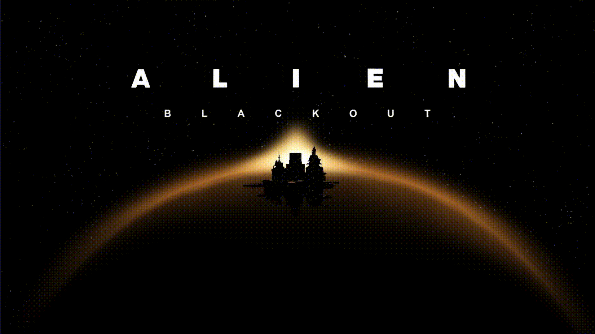
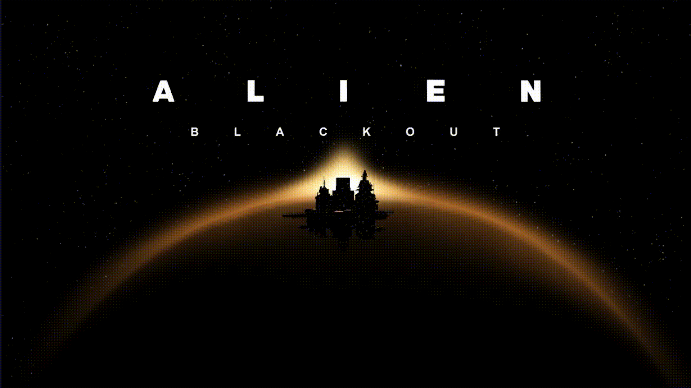

Información
Alíen vs Predator
(2004 - Trailer)
Una misteriosa ola de calor, que emana del centro del banco de hielo, se propaga por la Antártida. Para estudiar este fenómeno, Charles Bishop Weyland financia una expedición científica dirigida por Alexa Woods. El equipo descubre una pirámide que encierra vestigios de las civilizaciones azteca, egipcia y camboyana.
Paul Anderson
13 de agosto, 2004
1h 49m
Alíen | Xenomorfo
El xenomorfo, también conocido como Alien o Alienígena, es un ser antropomorfo extraterrestre y parasitoide ficticio, antagonista de la franquicia cinematográfica de la serie Alien. Tiene apariciones en precuelas, secuelas, cómics, novelas, videojuegos y crossovers como Alien vs Depredador.
Más informaciónDepredador | Yautjas
Depredador o Yautja, su nombre biológico, es una criatura alienígena de ciencia ficción, destacada por ser un cazador de trofeos humanos u otras especies alienígenas peligrosas. Tiene apariciones en precuelas, secuelas, cómics, novelas, videojuegos y crossovers como Alien vs Depredador.
Más informaciónMarines | Humanos
Son la tercera pieza del puzle y representan el eslabón más débil de una cadena en la que dos especies alienígenas, los yautja y los xenomorfos, luchan con crudeza. De esta forma, encontramos tres razas que han cruzado su camino muchas veces. “La vertiente más tensa y convencional”
Más informaciónLA MISMA GUERRA
EN DIFERENTES CUERPOS
¡CONOCE LOS DISTINTOS VIDEOJUEGOS RELACIONADOS CON LA SAGA!
 
